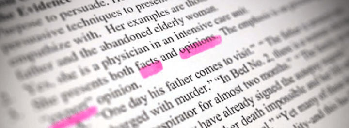

Getting band 9 for IELTS Listening is possible?
The answer is Yes! There are some things you need to do before the exam, and some things you need to pay attention to on the exam. By following these tips, you can considerably improve your score and even get a band 9! You will find here top 10 IELTS Listening tips to get a desired score on IELTS Listening test:
Before the test
Improve your general listening skills
The goal of IELTS Listening section is to test your listening skills. Don't use practice tests to improve your score: it's not enough! They will help you to become familiar with the test, but won't much improve your listening abilities. It is much more effective to do various listening exercises, listen to general listening materials (radio reports, TV-shows, documental programs etc) and only after that do IELTS Listening practice tests.
Polish your topic vocabulary
Section 3 is almost always about education. For example, students and a tutor talking about an assignment. Learn all the vocabulary you can about studying at university. This way you will understand this section better.
On the test
Word types
Skip over the questions and decide which type of word fits in each gap. Is it a noun, verb, adverb or adjective? Write 'N' for noun, 'V' for verb and so on. This will help you to focus on the specific word forms while listening.
"Plug in" the situation
Try to get an idea of the situation. Before each part you will be given a short introduction: 'Now, you will hear a dialogue between…' or 'you will hear a lecture on…' This information is not written on the question paper, so be attentive. Note: who are the speakers, why are they speaking and where are they. This will make understanding the rest of the recording much easier.
Don't loose attention
Remember, you will only hear the audio once. So if you didn't hear some words and passed over some questions, don't worry! Leave them blank and focus on the actual part. Review those questions at the end of the section, otherwise, you will only miss more questions and tangle in the recording. You will need to read, write and listen all at the same time.

Watch out words-indicators
Listen for words-indicators, such as however, but, then, finally. They help you to anticipate what the speaker will say.
Don't write answers too quickly
A lot of students fall into this trap: as soon as they hear the needed information, they take it for the correct answer. But sometimes this information is repeated or corrected further in the section. Example:
Sam: Thank you! I've received your email. So it is loren-hanson@gmail.com.
Loren: No-no! You have mistaken, it is loren-hamson@gmail.com, spelled with M.
Sam: Oh, I'm sorry...Check for silly mistakes
After each section you have 30 seconds to check your answers. It is important to check spelling, plurals and word forms. Remember that only correctly written answers will gain points.
Transfer answers accurately
At the end of the listening test you will have 10 minutes for transferring your answers into the answer sheet. And quite often students get confused in the numeration! As you write down your answers, check that they fit into the correct numbered space. In other words, make sure that answer for question 7 goes into space number 7.
Don't leave any blank answers!
You won't lose marks for incorrect answers, so even if you don't know the answer it is better to write something in the answers box. Read the question again and make a guess!
Use these IELTS Listening tips to improve your Listening skills! But don't forget about IELTS Listening practice too: